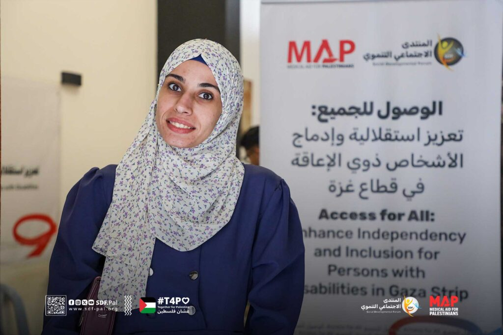
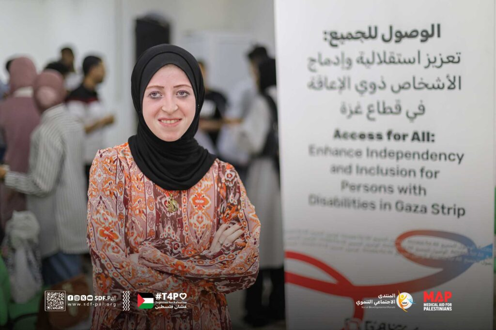
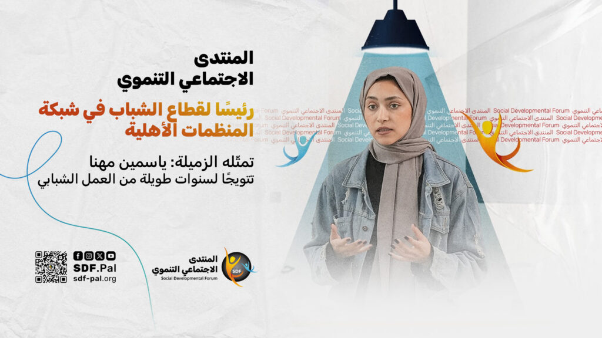

المُنتدى الاجتماعي التنموي
نحو مجتمع مدني فاعل وتنمية مستدامة في فلسطين
الموقع الالكتروني
منصــــــــة أثــــــــــــــــــــر
عشان فلسطيـــن
قصص من الميدان

نور الأطرش.. حين تتحوّل التحديات إلى رسالة
15 يونيو، 2025

إيمان أبو جراد.. النزوح ليس عائقًا أمام الحُلم
17 يونيو، 2025

المنتدى الاجتماعي التنموي رئيسًا لقطاع الشباب للمنظمات الاهلية الفلسطينية
20 يونيو، 2025